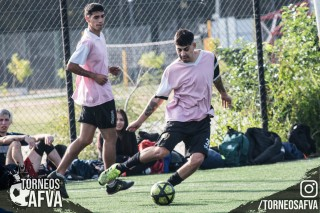
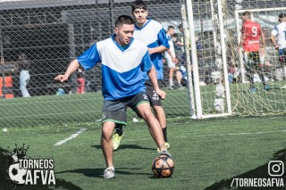

Tercer Amistoso
En el tercer amistoso UNIWE FC logró derrotar con 6 tantos contra 0 a Club Las Torres.
El equipo siguió jugando con pecheras que entrega el complejo ya que tuvieron más atrasos con sus propias camisetas.
UNIWE terminó con un gran nivel en el partido, pero debido a un golpe por la espalda perdió a uno de sus mejores jugadores del mediocampo, ya que al caer de la peor manera se fracturó su muñeca. A esta baja se suman 2 jugadores mas que están a la espera de mejorar con sus lesiones.
El próximo partido de UNIWE FC sería el Domingo 07 de Mayo, ya arrancando la primera fecha de la liga.
No hubo fotos debido al mal clima.
Segundo Amistoso
El segundo amistoso de UNIWE FC se disputó contra NUEVA CHICAGO, donde el equipo desmotró en la cancha todo lo que se había visto en el primer amistoso y mejorando muchos errores.
Si bien el equipo rival no tenía jugadores suplentes, UNIWE no tuvo ningún tipo de piedad y aplastó al contrario con un resultado de 14 a 1, demostrando la superioridad y sus ganas de seguir mejorando.
El equipo vistió, en esta ocasión, la pechera rosa, recordando la famosa camiseta titual del Palermo de la liga italiana donde jugaron Dybala, Pastore, entre otros.
Los jugadores esperan poder estrenar su conjunto en la 1ra fecha del torneo.
El próximo amistoso de UNIWE FC sería el Domingo 30 de Abril, con horario y contrario a confirmar.
Fotos tomadas del Facebook del Torneo AFVA.



Primer Amistoso
En el primer amistoso del equipo, UNIWE FC cayó 4 a 3 contra Branca FC, dejando buenas sensaciones para lo que viene de torneo.
El equipo vistió la famosa pechera azul del complejo deportivo mientras está a la espera de sus camisetas.
La formación con la que arrancó el equipo fue un 3-2-2 donde los centrales subian por la banda constantemente y
se replegaban a la hora de defender, todavía queda mucho por mejorar, agregando que con el tiempo los jugadores se
van a conocer más en la cancha para llevar a cabo mejores jugadas colectivas y tener más orden defensivo.
Los goleadores de la fecha fueron Lautaro Oviedo (x2) y "Rata" (x1)
El próximo amistoso del equipo sería el Domingo 23 de Abril a las 08:30 hs, a la espera del comienzo del torneo el 07 de Mayo.
Fotos tomadas del facebook del Torneo AFVA.


